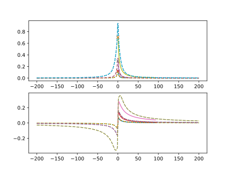

Note
Go to the end to download the full example code
Born Collision Frequency
Calculate the Born Collision Frequency and compare it to the published data shown in [Fortmann et al., 2010]. While the shape seems to be similar, overall, there is a difference that we currently don’t understand.

from pathlib import Path
import jax
import jax.numpy as jnp
import jpu.numpy as jnpu
import matplotlib.pyplot as plt
import numpy as onp
import jaxrts
ureg = jaxrts.ureg
try:
current_folder = Path(__file__).parent
except NameError:
current_folder = Path.cwd()
data_dir = current_folder / "../../../tests/data/Fortmann2010/Fig1"
# :cite:`Fortmann.2010` calculated these values at zero kelvin. This is
# currently not implemented, in our code. We therefore use a finite
# temperature, instead, accepting that we might deviate slightly from the
# published result
T = 0.1 * ureg.electron_volt / ureg.k_B
Zf = 1.0
fig, ax = plt.subplots(2)
@jax.tree_util.Partial
def S_ii(q):
return jnpu.ones_like(q)
for r_s in [1.0, 2.0, 5.0]:
n_e = 3 / (4 * jnp.pi * (r_s * ureg.a0) ** 3)
w_f = jaxrts.plasma_physics.fermi_energy(n_e) / (1 * ureg.hbar)
@jax.tree_util.Partial
def V_eiS(q):
return jaxrts.plasma_physics.coulomb_potential_fourier(
Zf, -1, q
) / jaxrts.free_free.dielectric_function_RPA_0K(
q, 0 * ureg.electron_volt, n_e
)
E_f = jaxrts.plasma_physics.fermi_energy(n_e)
E = jnp.linspace(-200, 200, 2000) * E_f
nu = jaxrts.free_free.collision_frequency_BA_fullFit(
E, T, S_ii, V_eiS, n_e, Zf
)
dimless_nu = (nu / w_f).m_as(ureg.dimensionless)
E_over_Ef_real, nu_real = onp.genfromtxt(
data_dir / f"Re_rs{r_s:.0f}.csv", unpack=True, delimiter=","
)
E_over_Ef_imag, nu_imag = onp.genfromtxt(
data_dir / f"Im_rs{r_s:.0f}.csv", unpack=True, delimiter=","
)
ax[0].plot(E_over_Ef_real, nu_real)
ax[1].plot(E_over_Ef_imag, nu_imag)
ax[0].plot(
(E / E_f).m_as(ureg.dimensionless), jnp.real(dimless_nu), ls="dashed"
)
ax[1].plot(
(E / E_f).m_as(ureg.dimensionless), jnp.imag(dimless_nu), ls="dashed"
)
nu = jaxrts.free_free.collision_frequency_BA_0K(E, S_ii, V_eiS, n_e, Zf)
dimless_nu = (nu / w_f).m_as(ureg.dimensionless)
ax[0].plot(
(E / E_f).m_as(ureg.dimensionless), jnp.real(dimless_nu), ls="dotted"
)
ax[1].plot(
(E / E_f).m_as(ureg.dimensionless), jnp.imag(dimless_nu), ls="dotted"
)
ax[0].plot(
0.1,
0.11523
* r_s**2
* (jnp.log(1 + 6.02921 / r_s) - 1 / (1 + r_s / 6.02921)),
marker="x",
)
plt.show()
Total running time of the script: (0 minutes 10.796 seconds)